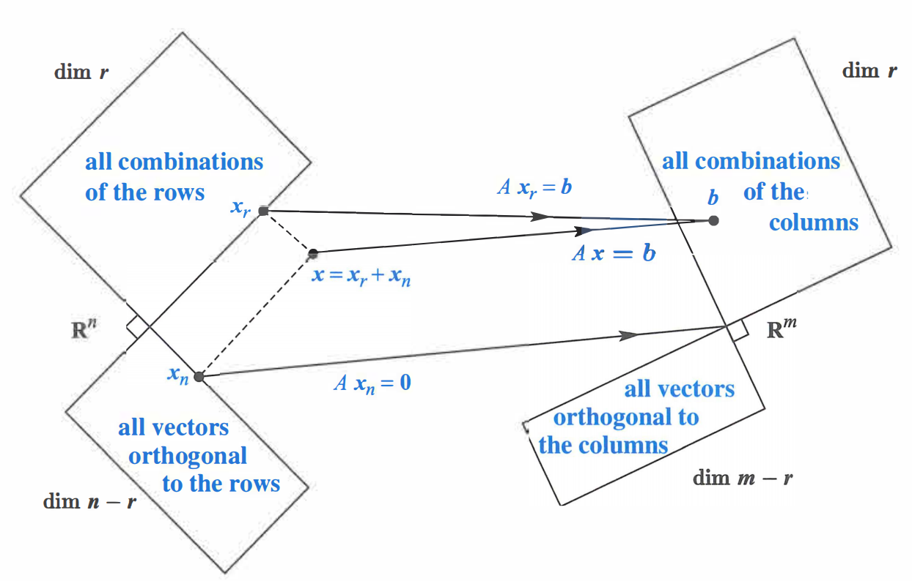
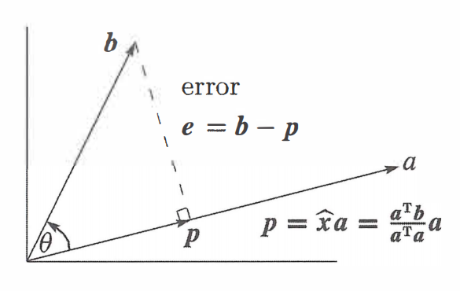
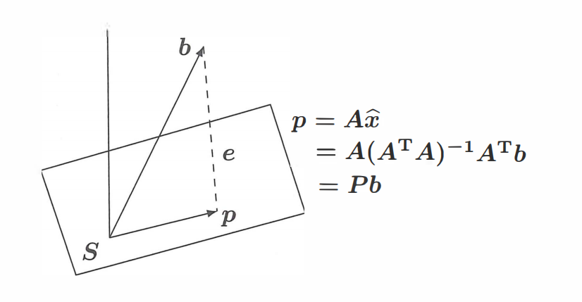
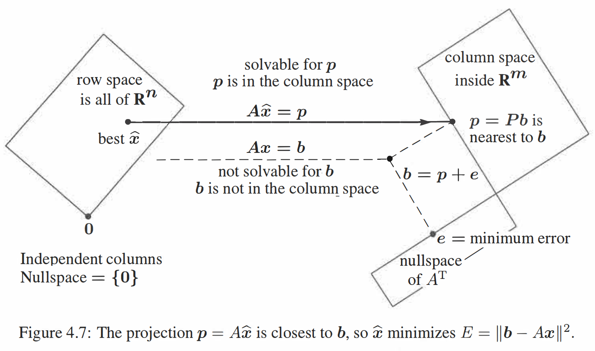

正交
约 5237 个字 4 张图片 预计阅读时间 17 分钟
1. 正交性
1.1 正交向量
内积为 \(0\) 的两个向量为正交向量，即 \(\boldsymbol{x}^{T}\boldsymbol{y}=0\)．
1.2 正交子空间
对于子空间 \(S,T\)，若 \(\forall x\in S,\forall y\in T\) 都有 \(\boldsymbol{x}^{T}\boldsymbol{y}=0\)，即两个子空间的任意向量都正交，则称这两个空间为正交子空间．
如果两个正交子空间存在公共向量 \(\boldsymbol{x}\)，则有 \(\boldsymbol{x}^{T}\boldsymbol{x}=0\)，故 \(\boldsymbol{x=0}\)．
1.3 正交补
如果两个正交子空间充满了整个向量空间，那么称这两个空间为正交补．例如，行空间与零空间就是 \(\mathbb{R}^{n}\) 的正交补：从一方面，行空间的任意向量与零空间的任意向量正交（因为零空间向量与行空间的基正交）；另一方面，行空间与零空间的维度之和为整个向量空间维度（\(r + (n-r)=n\)），因此行空间与零空间为正交补．列空间与左零空间同理．
向量空间内的任意向量必然可以分解为两个正交补子空间上的向量．例如 \(\mathbb{R}^{n}\) 上的任意一个 \(\boldsymbol{x}\) 都可以分解为行空间分量 \(\boldsymbol{x}_{row}\) 与零空间分量 \(\boldsymbol{x}_{null}\)．当矩阵 \(A\) 作用于该向量时，只作用在其行空间分量上而不作用在零空间分量上，因为 \(A\boldsymbol{x}=A(\boldsymbol{x}_{row}+\boldsymbol{x}_{null})=A\boldsymbol{x}_{row} + \boldsymbol{0}=A\boldsymbol{x}_{row}\)．因此多个行空间分量相同而零空间分量不同的向量被 \(A\) 映射为了同一向量，从而产生了降维；而满秩矩阵的正交补只有零向量，因此向量空间中的任意向量 \(\boldsymbol{x}\) 分解到满秩矩阵的行空间上时有 \(\boldsymbol{x=x}_{row}\)，与原向量一一对应，不会产生降维．该结论的正确性会在后文加以证明．
现在我们可以解释 Big Picture 中的直角了：也就是两空间互为正交补．

2. 投影
在进入投影部分前，我们先思考一下：为什么需要投影？
当 \(A\boldsymbol{x=b}\) 无解时，我们知道本质是因为 \(\boldsymbol{b}\) 不在 \(A\) 的列空间内．为了求得一个近似解，我们可以将 \(\boldsymbol{b}\) 以某种方式变换为 \(A\) 列空间内的某个向量，这样就有解了．而投影正是使得近似解误差最小的变换方法．
2.1 投影到直线
我们先从投影到直线这种简单情况说起．在 \(\mathbb{R}^{n}\) 空间中给定两个向量 \(\boldsymbol{a,b}\)，求 \(\boldsymbol{b}\) 在 \(\boldsymbol{a}\) 上的投影．我们记录该投影为 \(\boldsymbol{p}\)，而将原向量与投影向量的误差即为 \(\boldsymbol{e}\)，即 \(\boldsymbol{b=p+e}\)．

不妨设 \(\boldsymbol{p}=\boldsymbol{a}\hat{x}\)，因此 \(\boldsymbol{e}=\boldsymbol{b}-\boldsymbol{a}\hat{x}\)，其中 \(\hat{x}\) 为常数．我们有 \(\boldsymbol{e}\perp\boldsymbol{a}\)，即 \(\boldsymbol{a}^{T}(\boldsymbol{b}-\boldsymbol{a}\hat{x})=0\)，\(\hat{x}\boldsymbol{a}^{T}\boldsymbol{a}=\boldsymbol{a}^{T}\boldsymbol{b}\)．因此
考虑一个投影矩阵 \(P\)，它能将任意给定的向量 \(\boldsymbol{b}\) 投影 \(\boldsymbol{a}\) 上得到 \(\boldsymbol{p}\)．由于
因此 \(P=\dfrac{\boldsymbol{a}\boldsymbol{a}^{T}}{\boldsymbol{a}^{T}\boldsymbol{a}}\)．
接下来我们讨论矩阵 \(P\) 的性质．
首先由于 \(P\) 是由 \(\boldsymbol{a}\boldsymbol{a}^{T}\)（列 \(\times\) 行）生成的，其秩为 \(1\)．我们从 \(P\) 的列空间也能看出这一点：其列空间是一条经过向量 \(\boldsymbol{a}\) 的直线．从列空间角度，\(P\boldsymbol{b}\) 的结果是 \(P\) 列向量的线性组合，落在 \(\boldsymbol{P}\) 的列空间内；从集合角度，\(P\boldsymbol{b}\) 的结果为 \(\boldsymbol{b}\) 在 \(\boldsymbol{a}\) 上的投影；因此 \(P\) 的列空间只有经过 \(\boldsymbol{a}\) 的直线，与秩 \(1\) 相照应．
其次，由于 \(\boldsymbol{a}\boldsymbol{a}^{T}\) 是对称矩阵，因此 \(P\) 也是对称矩阵．
最后，如果我们对一个向量做两次投影，第二次是无效的，即 \(P^{2}=P\)．从公式角度来看，\(P^{2}=\dfrac{\boldsymbol{a}\boldsymbol{a}^{T}}{\boldsymbol{a}^{T}\boldsymbol{a}}\cdot \dfrac{\boldsymbol{a}\boldsymbol{a}^{T}}{\boldsymbol{a}^{T}\boldsymbol{a}}=\boldsymbol{a}^{T}\boldsymbol{a}\dfrac{\boldsymbol{a}\boldsymbol{a}^{T}}{(\boldsymbol{a}^{T}\boldsymbol{a})^{2}}=\dfrac{\boldsymbol{a}\boldsymbol{a}^{T}}{\boldsymbol{a}^{T}\boldsymbol{a}}=P\)．
2.2 投影到空间
接下来我们考虑一般情况．由于投影的目的是得到方程组的近似解，因此我们通常是将任意向量 \(\boldsymbol{b}\) 投影到 \(A\) 的列空间上．记住这个视角，我们会发现最后得到的公式只不过是把向量 \(\boldsymbol{a}\) 替换为了矩阵 \(A\)．
为了方便理解，我们讨论三维空间的情况．不妨设 \(A\) 是一个 \(3\times2\) 的矩阵，其有两个线性无关的向量 \(\boldsymbol{a}_{1},\boldsymbol{a}_{2}\)（视他们为 \(C(A)\) 的基），即 \(A=[\boldsymbol{a}_{1},\boldsymbol{a}_{2}]\)．\(A\) 的向量空间是过原点的平面．\(\boldsymbol{b}\) 是三维空间内的一个任意向量．同样，我们记 \(\boldsymbol{b}\) 在 \(C(A)\) 的投影为 \(\boldsymbol{p}\)，误差为 \(\boldsymbol{e}\)，即 \(\boldsymbol{b=p+e}\)．

由于 \(\boldsymbol{p}\) 在 \(C(A)\) 内，因此 \(\boldsymbol{p}\) 可以分解为基的线性组合，即 \(\boldsymbol{p}=\boldsymbol{a}_{1}\hat{x_{1}}+\boldsymbol{a}_{2}\hat{x_{2}}=A\boldsymbol{\hat{x}}\)，因此 \(\boldsymbol{e=b-p=b-}A\boldsymbol{\hat{x}}\)．我们知道 \(\boldsymbol{e}\) 与 \(C(A)\) 正交，这等价于 \(\boldsymbol{e}\) 与 \(C(A)\) 的基 \(\boldsymbol{a}_{1}, \boldsymbol{a}_{2}\) 正交，即
写成矩阵形式为
即
也就是 \(\boldsymbol{e}\) 在 \(A\) 的左零空间中．这与我们的直觉相符合，因为 \(\boldsymbol{e}\) 与 \(A\) 的列空间正交．实际上，我们可以直接根据 \(\boldsymbol{e}\) 在 \(N(A^T)\) 中而写出这个式子．
我们将方程打开得到 \(A^{T}A\boldsymbol{\hat{x}}=A^{T}\boldsymbol{b}\)．我们知道这个方程一定有解．也就是说，当方程组 \(A\boldsymbol{x=b}\) 无解时，我们给方程组两边左乘 \(A^{T}\)，就可以让方程组可解，得到近似解．
继续化简方程得到 \(\boldsymbol{\hat{x}}=(A^{T}A)^{-1}A^{T}\boldsymbol{b}\)．从而 \(\boldsymbol{p}=A\boldsymbol{x}=A(A^{T}A)^{-1}A^{T}\boldsymbol{b}\)．又有 \(\boldsymbol{p}=P\boldsymbol{b}\)，因此将任意向量投影到 \(A\) 列空间的投影矩阵为
注意
有的人可能会用乘积逆的运算法则，将矩阵化简为 \(P=A(A^{T}A)^{-1}A^{T}=AA^{-1}(A^{T})^{-1}A^{T}=I\)．不能这么做的原因是我们只假设了 \(A\) 列向量无关即列满秩，因此 \(A^{T}A\) 是可逆方阵，而 \(A\) 与 \(A^{T}\) 可能不是方阵，因此分别不可逆．
当然，如果 \(A\) 是方阵，再加上 \(A\) 为列满秩矩阵，我们得到 \(A\) 本身即为可逆矩阵，此时 \(P=I\) 就是正确的了．从直观上理解，\(A\) 的列空间充满了整个 \(\mathbb{R}^{m}\)，因此任何向量往 \(C(A)\) 投影都会得到其本身．
为什么列满秩矩阵 \(A\) 满足 \(A^{T}A\) 可逆
首先 \(A^TA\) 必然为方阵．如果 \(A^{T}A\) 可逆，那么 \(A^{T}A\boldsymbol{x=0}\) 只有零解，这是充要的．因此我们可以转化问证明 \(A^{T}A\boldsymbol{x=0}\) 只有零解．
两边同时左乘 \(\boldsymbol{x}^{T}\) 得到 \(\boldsymbol{x}^{T}A^{T}A\boldsymbol{x}=0\)，即 \((A\boldsymbol{x})^{T}(A\boldsymbol{x})=0\)．由于 \(A\boldsymbol{x}\) 为列向量，因此该式子说明 \(A\boldsymbol{x}\) 模长为 \(0\)，即 \(A\boldsymbol{x=0}\)．
由于 \(A\) 列满秩，因此当且仅当 \(\boldsymbol{x=0}\) 有 \(A\boldsymbol{x=0}\)．这说明当且仅当 \(\boldsymbol{x=0}\) 有 \(A^{T}A\boldsymbol{x}=0\)，即 \(A^{T}A\boldsymbol{x}=0\) 只有零解，得证．
我们观察到 \(P=A(A^{T}A)^{-1}A^{T}\) 与 \(P=\dfrac{\boldsymbol{a}\boldsymbol{a}^{T}}{\boldsymbol{a}^{T}\boldsymbol{a}}\) 很相似，都是内积作为分母而内积作为分子．当 \(A\) 只有一列时，其退化为后者．
如果 \(\boldsymbol{b}\) 在 \(C(A)\) 中，即 \(\exists \boldsymbol{x}(\boldsymbol{b=}A\boldsymbol{x})\)，则
即投影向量等于本身，符合直觉．
当我们将 \(\boldsymbol{b}\) 投影到 \(C(A)\) 时，剩余分量 \(\boldsymbol{e}\) 为 \(N(A^{T})\) 内的向量，该向量对应的投影矩阵为 \(I-P\)，因为 \(\boldsymbol{b}=P\boldsymbol{b}+(I-P)\boldsymbol{b}\)．
在前一节的 Big Picture 中，我们将 \(\boldsymbol{x}\) 分解成行空间分量 \(\boldsymbol{x}_{row}\) 与零空间分量 \(\boldsymbol{x}_{null}\)；在本节中，我们将 \(\boldsymbol{b}\) 分解成列空间分量 \(\boldsymbol{p}\) 与左零空间分量 \(\boldsymbol{e}\)．

3. 最小二乘法
投影矩阵最广泛的应用就是最小二乘法．当我们想用直线近似几个离散点时，我们本质上是解一个线性方程组：这个线性方程组只有两个变量，分别为直线的斜率与截距；而会有多个方程限制，因此我们基本上无法满足所有方程．退而求其次，我们选择拟合误差最小的直线，而这本质上就是将数据点投影到我们的拟合直线上．
3.1 拟合三个点
考虑用直线拟合二维坐标系上三点：\((1,1),(2,2),(3,2)\)．不妨设直线方程为 \(y=C+Dx\)，则我们有
与上文记号相统一，此处
显然方程组无解．因此我们考虑求解 \(A^{T}A\boldsymbol{x}=A^{T}\boldsymbol{b}\)．不妨将 \(A\) 与 \(\boldsymbol{b}\) 拼起来得到增广矩阵 \([A,\boldsymbol{b}]\)，方便一起计算，我们有
此时我们求解
得到
因此最佳拟合直线为 \(y=\dfrac{2}{3}+\dfrac{1}{2}x\)．
为什么误差最小
向量在列空间的投影是以垂线形式得到的最小误差 \(\boldsymbol{e}\)，但这并不代表我们在最小二乘中的误差是点到直线的垂直距离．实际上，由于 \(\boldsymbol{e=b-}A\boldsymbol{\hat{x}}\)，而 \(\boldsymbol{b}\) 是我们的真实值（观测值），\((A\boldsymbol{\hat{x}})_{i}\) 是我们计算出来的拟合值，他们的关系仅仅是代数加减．因此误差最小的误差指的是真实观测值 \(y_i\) 与拟合值 \(\hat{y}_i\) 之间的竖直距离偏差，而不是从数据点向拟合直线作垂线所得到的几何最短距离．
对于空间内任意一个 \(\boldsymbol{b}\)，其有两个分量：在 \(A\) 列空间上的分量 \(\boldsymbol{p}\) 与在 \(A\) 左零空间上的分量 \(\boldsymbol{e}\)．由于列空间与左零空间正交，由勾股定理，对于我们的拟合向量 \(A\boldsymbol{x}\)，误差为
我们无法改变 \(\|\boldsymbol{e^{2}}\|\) 的大小，只能通过调整 \(\boldsymbol{x}\) 来让 \(\|A\boldsymbol{x}-\boldsymbol{p}\|\) 最小，即 \(A\boldsymbol{x=p}\)，此时 \(\|A\boldsymbol{x}-\boldsymbol{b}\|^{2}=\|\boldsymbol{e}\|^{2}\)．
而转化为坐标系中，由于 \(\boldsymbol{e}\) 是一个 \(3\) 维向量，因此 \(\|\boldsymbol{e}^{2}\|=e_{1}^{2}+e_{2}^{2}+e_{3}^{2}\)，即为竖直距离偏差平方和．
实际上，我们也可以通过对 \(E=\|A\boldsymbol{x}-\boldsymbol{b}\|^{2}=(C+D-1)^{2}+(C+2D-2)^{2}+(C+3D-2)^{2}\) 求偏导来计算极值，得到的结果与使用线性代数得到的结果一样．
3.2 拟合m个点
接下来我们将其扩展到直线拟合 \(m\) 个点的情况．不妨设这 \(m\) 个点的坐标为 \((t_{i}, b_{i})\)，则我们有
因此矩阵 \(A\)、\(A^{T}A\)、\(A^{T}\boldsymbol{b}\) 分别为
因此最佳拟合直线即为 \(A^{T}A\boldsymbol{\hat x}=A^{T}\boldsymbol{b}\) 的解，即
其中误差为 \(E=\|A\boldsymbol{x-b} \|^{2}=\sum(C+Dt_{i}-b_{i})^{2}\)．
3.3 正交的优势
如果 \(A\) 的两列是正交的，由于其第一列均为 \(1\)，因此等价于第二列和为 \(0\)．即 \(\sum t_{i}=0\)，我们会得到
其成为了一个对角矩阵．而对角矩阵解方程是很容易的，可以轻松解得
事实上，我们可以手动构造出正交列．将所有的待拟合点横坐标全部减去 \(\bar t=\sum t_{i}/m\)，即新坐标 \(t_{i}'=t_{i}-\bar t\)，此时显然有 \(\sum t_{i}'=0\)，可以轻松地计算出 \(C'=\bar b\) 与 \(D\)（平移不改变斜率）．拟合出的直线结果实际上是 \(b=\bar{b}+D(t-\bar t)\)，展开得到 \(b=Dt+(\bar b-D\bar t)\)，原始方程 \(b=C+Dt\) 中的截距 \(C=\bar b-D\bar t\)．
3.4 拟合二次函数
最小二乘法亦适用于拟合高次函数．以二次函数 \(C+Dt+Et^{2}\) 举例，虽然函数本身不线性，但将具体的点带入后其成为一个线性方程组．与一次函数不同的是，此时的矩阵 \(A\) 会有三列．
4. 正交矩阵
上一节中我们知道，如果 \(A\) 的列向量之间正交，\(A^{T}A\) 的结果会是对角矩阵．实际上，若 \(A\) 的列向量之间正交且内积为 \(1\)，\(A^{T}A\) 会成为单位矩阵 \(I\)，从而更加方便我们计算．
记向量组 \(\boldsymbol{q}_{1},\cdots,\boldsymbol{q}_{n}\) 是标准正交的，当且仅当
即该向量组内每一个向量均为单位向量，且两两正交．我们记由标准正交向量组当作列向量拼成的矩阵 \(Q\) 为列正交矩阵，则 \(Q^{T}Q=I\)．
特别的，当 \(Q\) 为方阵时，称其为正交矩阵．由 \(Q^{T}Q=I\) 我们得到 \(Q^{T}=Q^{-1}\)，即正交矩阵的转置与逆相等．
4.1 常见正交矩阵
旋转矩阵：如
置换矩阵：由于 \(P\) 是 \(I\) 进行任意次行交换后的矩阵，显然 \(P\) 满足每行有且仅有一个 \(1\)、每列有且仅有一个 \(1\)，因此其符合标准正交性．
反射矩阵：对于任意单位向量 \(\boldsymbol{u}\)，反射矩阵 \(Q=I-2\boldsymbol{uu}^{T}\) 的效果是将向量 \(\boldsymbol{x}\) 沿垂直 \(\boldsymbol{u}\) 的子空间进行镜像操作．
反射矩阵的证明
\(\boldsymbol{u}\) 是镜像空间的法向量．将 \(\boldsymbol{x}\) 做镜像操作，等价于将其关于镜像空间的平行分量保留而翻转垂直分量，亦等价于将其关于法向量 \(\boldsymbol{u}\) 的垂直分量保留而翻转平行分量．
\(\boldsymbol{x}\) 关于镜像空间的垂直分量，即\(\boldsymbol{x}\) 关于 \(\boldsymbol{u}\) 的平行分量，即为 \(\boldsymbol{x}\) 到 \(\boldsymbol{u}\) 的投影，为 \(\boldsymbol{x}_{\perp}=\dfrac{\boldsymbol{uu}^{T}}{\boldsymbol{u}^{T}\boldsymbol{u}}\boldsymbol{x}=\boldsymbol{uu}^{T}\boldsymbol{x}\)；同理可得关于镜像空间的平行分量为 \(\boldsymbol{x}_{\parallel}=\boldsymbol{x}-\boldsymbol{x}_{\perp}\)．
因此，反射结果为 \(\boldsymbol{x}_{\parallel}-\boldsymbol{x}_{\perp}=\boldsymbol{x}-2\boldsymbol{x}_{\perp}=\boldsymbol{x}-2\boldsymbol{uu}^{T}\boldsymbol{x}=(I-2\boldsymbol{uu}^{T})\boldsymbol{x}\)．可得反射矩阵 \(Q=I-2\boldsymbol{uu}^{T}\)．
显然 \(Q\) 为对称矩阵，则 \(Q^{T}Q=Q^{2}=(I-2\boldsymbol{uu}^{T})^{2}=I-4\boldsymbol{uu}^{T}+4\boldsymbol{uu}^{T}\boldsymbol{uu}^{T}=I\)．所以反射矩阵 \(Q\) 十分特殊，其满足 \(Q=Q^{T}=Q^{-1}\)．
4.2 正交变换
正交矩阵对向量的变换称为正交变换，其不改变向量的长度与向量间的角度．由于长度和角度的本质都是向量内积，因此只需证明正交变换不改变向量内积结果．对于向量 \(\boldsymbol{x,y}\)，正交变换后的内积
与正交变换前的内积相等．因此我们证明了其长度与角度的不变性．
4.3 标准正交基投影
当我们求 \(\boldsymbol{b}\) 往某一子空间的投影时，如果选取该投影空间的一组标准正交基，形成列正交矩阵 \(Q\)，则有 \(Q^{T}Q\boldsymbol{\hat x}=Q^{T}\boldsymbol{b}\)，因此 \(\boldsymbol{\hat x}=Q^{T}\boldsymbol{b}\)．此时投影向量为 \(QQ^{T}\boldsymbol{b}\)，投影矩阵为 \(QQ^{T}\)．
由于列正交矩阵的特殊性，\(QQ^{T}=\boldsymbol{q}_{1}\boldsymbol{q}_{1}^{T}+\cdots+\boldsymbol{q}_{n}\boldsymbol{q}_{n}^{T}\)，因此投影向量为
即求 \(\boldsymbol{b}\) 在目标子空间的投影时，若选取一组标准正交基，那么投影结果等价于往每一个基向量上投影再直接相加．
4.4 Gram-Schmidt 正交化
由于列正交矩阵拥有许多良好性质，因此我们希望将我们的矩阵转化为同一子空间内的列正交矩阵．不妨设三维子空间的三个线性无关向量 \(\boldsymbol{a}_{1},\boldsymbol{a}_{2},\boldsymbol{a}_{3}\)，我们的目标是构造出一组标准正交基．
首先是将其正交化．考虑正交化后的向量为 \(\boldsymbol{v}_{1},\boldsymbol{v}_{2},\boldsymbol{v}_{3}\)，任取第一个向量，如 \(\boldsymbol{v}_{1}=\boldsymbol{a}_{1}\)；然后对于后续向量，减去其在已选择的向量上的分量．
如对于 \(\boldsymbol{a}_{2}\)，其减去自身在 \(\boldsymbol{v}_{1}\) 上的投影，得到的向量 \(\boldsymbol{v}_{2}=\boldsymbol{a}_{2}-\dfrac{\boldsymbol{v}_{1}^{T}\boldsymbol{a}_{2}}{\boldsymbol{v}_{1}^{T}\boldsymbol{v}_{1}}\boldsymbol{v}_{1}\) 满足 \(\boldsymbol{v}_{1},\boldsymbol{v}_{2}\) 生成空间与 \(\boldsymbol{a}_{1},\boldsymbol{a}_{2}\) 生成空间一样的前提下 \(\boldsymbol{v}_{1},\boldsymbol{v}_{2}\) 正交．
同理有
得到正交基后，将其单位化．这一步很简单，除以各自模长即可．最后得到 \(Q=[\boldsymbol{q}_{1},\boldsymbol{q}_{2},\boldsymbol{q}_{3}]\)．
4.5 A的QR分解
经过正交化后得到的正交矩阵 \(Q\) 与原矩阵 \(A\) 在同一子空间中，这意味着这两个矩阵的列向量之间一定可以互相表示．事实上这又是一个矩阵分解的思路，可以将 \(A\) 分解为 \(QR\)．
事实上，由于计算 \(\boldsymbol{q}_{i}\) 时只用到了 \(j\le i\) 的 \(\boldsymbol{a}_{j}\)，因此 \(R\) 矩阵一定是一个三角矩阵，确切而言是上三角矩阵．考虑将原矩阵的列向量分解到标准正交基上，由于上述性质以及标准正交基投影的性质，可以得到
矩阵形式即为
即 \(A=QR\)．使用了该分解后，我们有
则 \(A^{T}A\boldsymbol{\hat x}=A^{T}\boldsymbol{b}\) 化简为 \(R^{T}R\boldsymbol{\hat x}=R^{T}Q^{T}\boldsymbol{b}\)．而 \(R^{T}\) 是下三角矩阵，由于对角线元素（\(\boldsymbol{a}_{i}\) 在 \(\boldsymbol{q}_{i}\) 上的投影长度，即归一化前的模长 \(\|\boldsymbol{v}_{i}\|\)，若原向量组线性无关必然不为 \(0\)）不为 \(0\)，则 \(R^{T}\) 可逆，因此 \(R\boldsymbol{\hat x}=Q^{T}\boldsymbol{b}\)．由于 \(R\) 为上三角矩阵，只需从下到上回代即可轻易解出方程组．